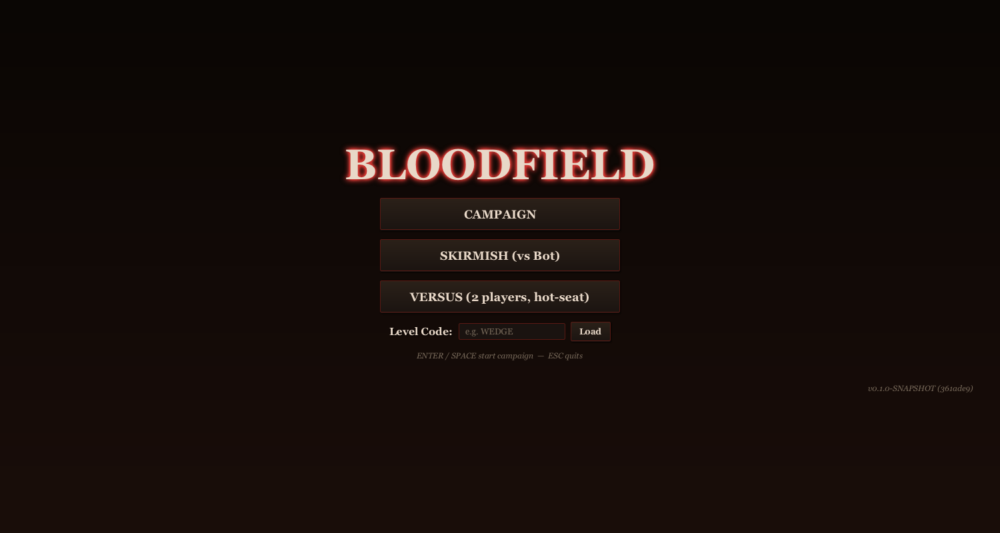
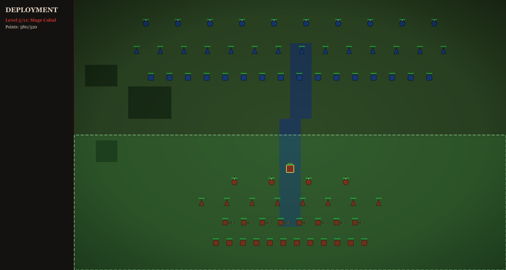
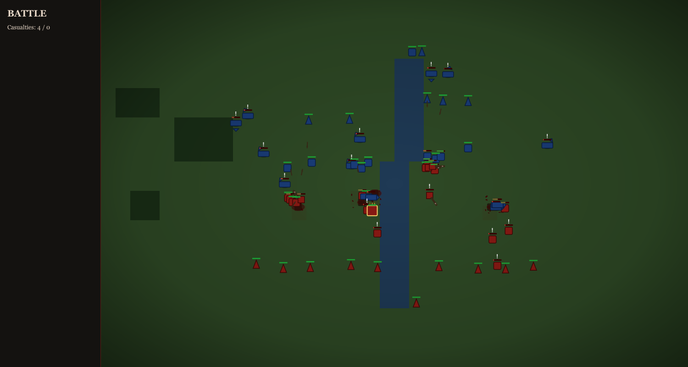
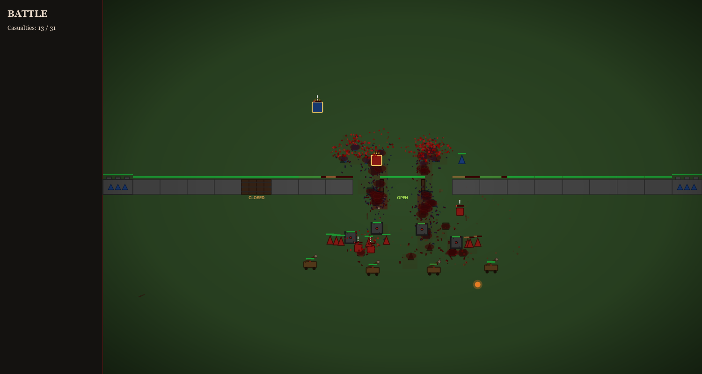
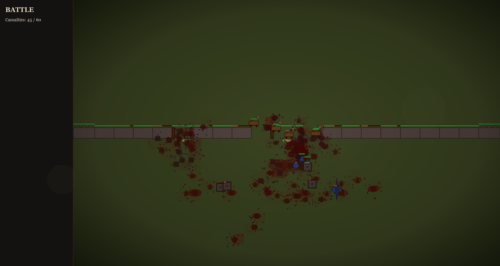

armies clash. bones break. crows feast.
Bloodfield is an auto-battler — you don't control units after the fight starts. You spend a points budget arranging your line: pikemen up front, archers on the flanks, a hero in the middle. You hit Start, and the only thing left to do is watch. Soldiers seek their nearest enemy on their own. Arrows arc, fireballs land, walls fall, dragons sweep the field. Bodies pile up where men died and stay there: blackening, pooling, attracting crows. The whole thing plays out in seconds and the only question is whether your formation was right.
Screenshots
{kind=link}

{kind=link}

{kind=link}

{kind=link}

{kind=link}

Download
Pick your platform. Each release ships a GUI installer (bundled JRE, no Java needed), a headless CLI native binary (compiled with GraalVM, no JVM, boots in milliseconds), and a platform-independent fat jar (run anywhere with JRE 21+).
Fetching latest release…
Build from source
Java 21 required. Maven only — no Gradle.
git clone https://github.com/rzo1/bloodfields.git
cd bloodfields
# Run from source
mvn javafx:run
# Fat jar
mvn -DskipTests package
java -jar target/bloodfields-*-all.jar
# Native installer (jpackage, bundles a JRE)
mvn -Ppackage-native package -DskipTests
# Native CLI binary (requires GraalVM 21+)
mvn -Ppackage-graal package -DskipTests